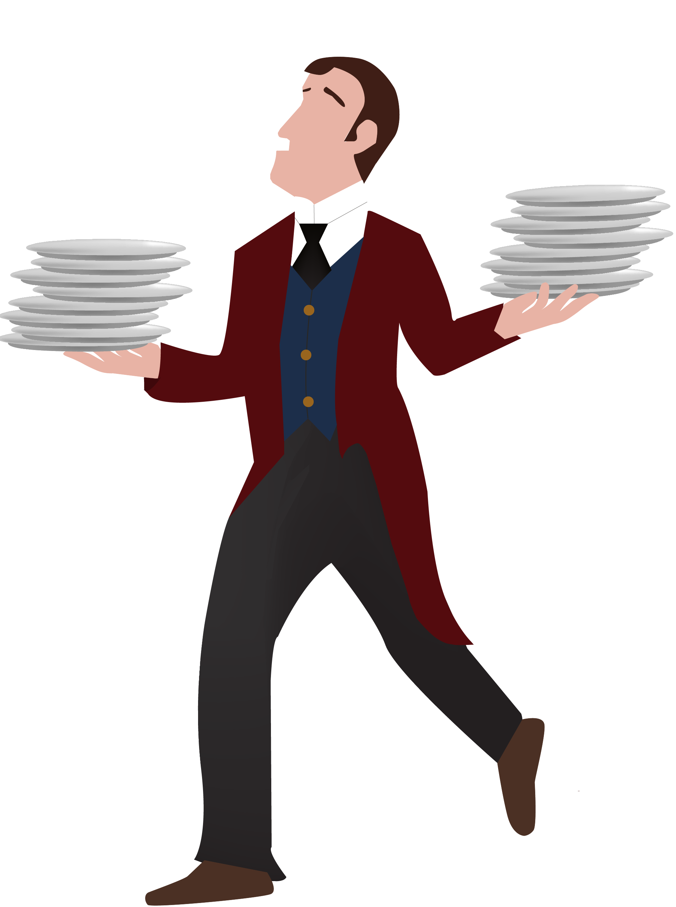
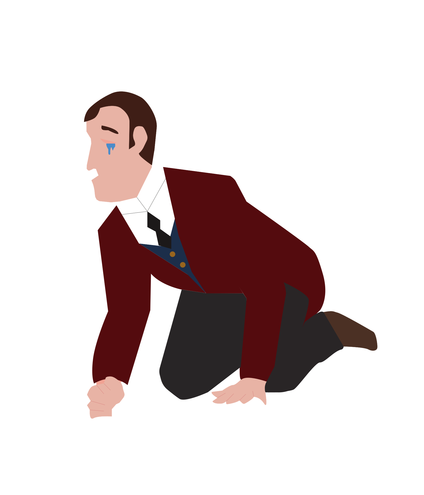
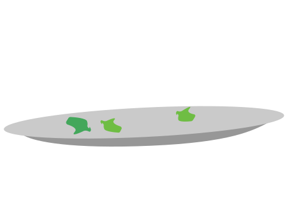
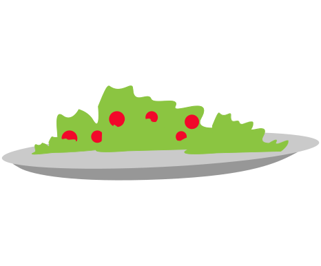
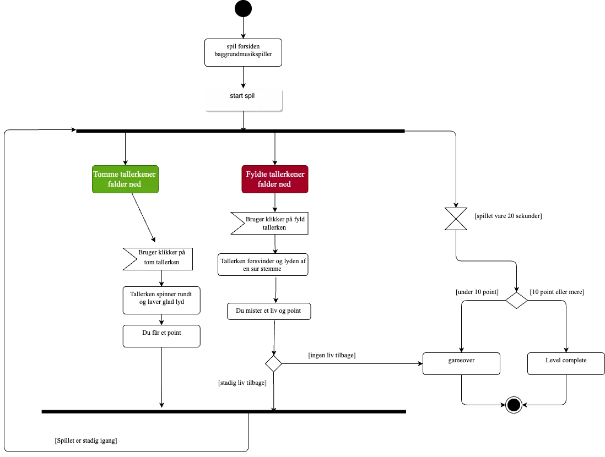
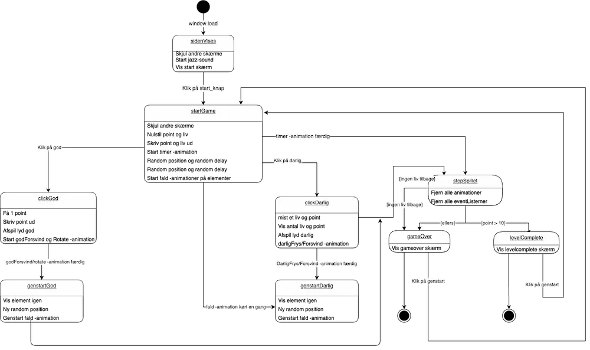

04
Grundlæggende animation
About:
I dette tema blev jeg introduceret til javascript og css-animation. Projektet i dette forløb var, at jeg skulle designe og kode et spil, med bruget af html, csss og javascript, samt designe et website som viste min designproces. Jeg fandt dette projekt særdeles udfordrende, både på det visulle men især at lære javascript, da det var en helt ny form for kodning, og derfor mange nye regeler samt elementer at holde styr på. Det var også i dette projekt, at jeg følte jeg videreudviklede på mine kompetencer indenfor kode, da man her kunne se og forstår flere aspekter for webdesign, hvilket kan bidrage til mere komplekse webdesignes.
Designet af mit spil
Ide
Et af kriterierne for spillet var, at det skulle tage udgangspunkt i gode og onde elementer. Dette ledte mig til konceptet "Plate Pursuit", hvor en tjenerfigur skal samle gode elementer i form af tomme tallerkener og undgå de onde elementer. Efter at have identificeret spilelementerne, udviklede jeg skitser af restauranten, der skulle danne rammen om spiluniverset.
Plate Pursuit
Sådan spilles "Plate Pursuit": Hjælp tjeneren med at indsamle beskidte tallerkener fra gæsterne i restauranten inden tiden udløber. Pas på ikke at indsamle fyldte tallerkner, da det resulterer i tab af et liv og et point. Målet er at indsamle 10 tomme tallerkner for at vinde spillet.
Valg af stil
Jeg valgte at benytte designstilen "flat design" til mit spil, hvor man gør brug af enkelhed og flade, todimensionelle elementer. Jeg blev meget inspireret af stilen fra 1920'erne og specifikt art deco stilen, hvilket er den røde tråd gennem hele webdesignet samt spildesignet, fra valg af font, farvepalette og spilelementer. I spilscenen ønskede jeg at inkorporere genkendelige elementer fra 1920'ernes indretning og stil, såsom en lysekrone og røde gardiner, der også afspejles i tjeneruniformen.
Figure
 spilelementer
 De forskellige spilscener
Baggrundskærm
Level complete
Game over
Kodning af mit spil
Aktivitetsdiagram
Mit aktivitetsdiagram bruges til at visualisere spillets forløb af aktivtiter og udfald. Tjenerkarakteren skal indsamle beskidte tallerkener fra gæsterne. Der falder tomme tallerkener (gode ting) og tallerkener med mad på (onde ting). Spillet vare 20 sekunder, man skal have 10 point for at vinde og hvis man mister sine 3 liv slutter spillet og man taber. Hvis man klikker på en tallerken med mad på, forsvinder den (lyden af en sur mand). Hvis man klikker på en tom tallerken, roterer den rundt (en glad lyd som jubi). På denne måde hjælper aktivitetsdiagrammet med at give både designere og udviklere en klar forståelse af, hvordan spilaktiviteterne er struktureret, og hvordan de forskellige elementer i spillet interagerer med hinanden. Det letter planlægning, design og implementering af spillet ved at skabe en visuel repræsentation af spilprocessen.
State Machine Diagram
Mit State Machine diagram visualiserer, ligesom mit aktivitetsdiagram, spillets proces og illustrerer, hvilke javascriptfunktioner der gør sig gældende i mit spil, og de forskellige forløb samt funktioner, der forekommer gennem spillet, hvis man klikker på enten god/dårlig ting, samt udfaldet af spillet, herunder game over/level complete. State Machine Diagrammet var en stor hjælp for mig, da jeg skulle kode spillet. Det var en hjælpemiddel til at holde overblikket over mine javascriptfunktioner og om de forskellige overgangsscenarier.
Klik på linket for at se færdigt produkt.